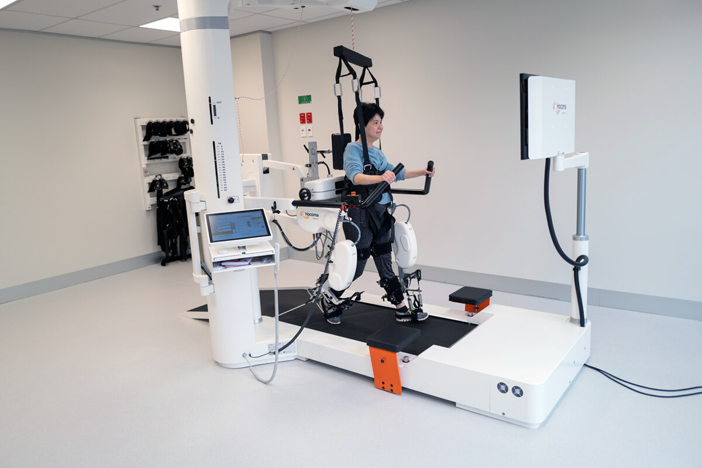

Medicina interna
Dra.Franca Salas
Médico cirujano
Dr. Juan Salazar
Dermatóloga
Dra. Cecilia Lu

Medicina interna
Brindamos consultas médicas especializadas para cuidar de tu salud de forma integral.
Contamos con un laboratorio moderno para realizar análisis clínicos con resultados rápidos y precisos.
Ofrecemos servicios de radiografía, ecografía y resonancias magnéticas para diagnósticos más precisos.
Nuestro equipo especializado en fisioterapia te ayudará a recuperarte de lesiones y mejorar tu movilidad.
Ofrecemos un completo servicio de vacunación para proteger tu salud y la de tu familia.
Estamos disponibles las 24 horas para atender cualquier emergencia médica de manera rápida y eficiente.
Medicina interna
Médico cirujano
Dermatóloga
Medicina interna